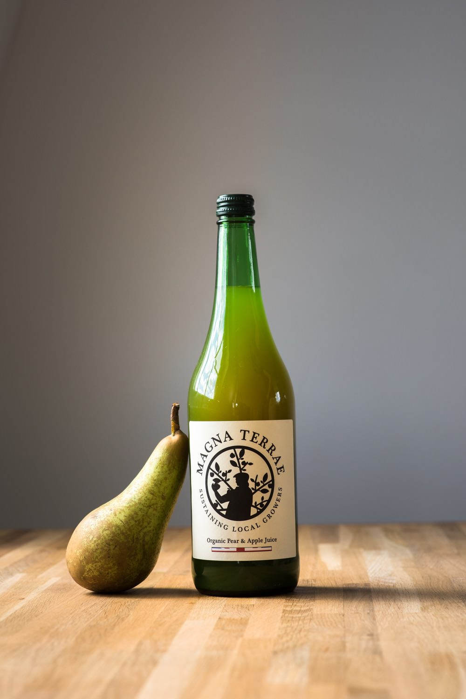
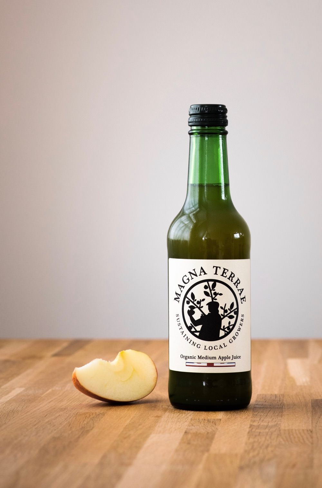

Organic Pear & Apple Juice
Permaculture grown Pear and Apple Juice. Not too sweet nor too dry. Tastes just beautiful. Farm pressed. 100% Organic.
1L

Organic Apple Juice
Permaculture grown "Medium" Apple. Not too sweet nor too dry, it tastes just beautiful. Farm pressed. 100% Organic.
33cl

Organic Apple & Raspberry Juice
Permaculture grown Apple & Raspberry Juice. Apple juice enriched by fresh raspberries. Farm pressed. 100% organic.
33cl